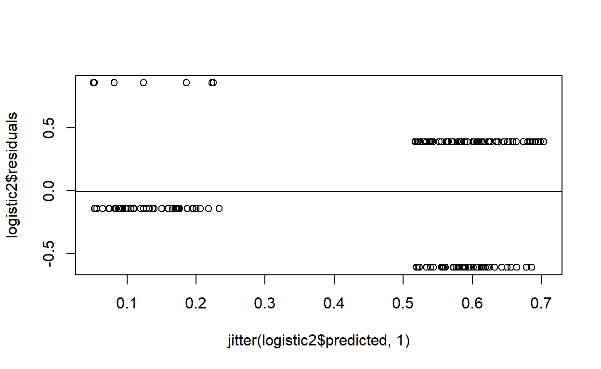

Logistic Regresison
Overview
This tutorial focuses on learning about logistic regression. I accomplish this with a combination of videos, text, and exercises. The videos are as before but now you can run example code and do exercises right in the tutorial. I can even add questions so that you can make sure you understand concepts before moving on.
The powerpoint slides for the presentation in the videos are on Canvas if you want a copy.
Packages
This tutorial uses the following packages:
popbiofor cool graphing functionlmtestfor likelihood ratio testslearnrandshinyandrmarkdownfor aspects of the tutorial
These packages are automatically loaded within this tutorial. If you are working outside of this tutorial (i.e. in RStudio) then you need to make sure that the package has been installed by executing install.packages("package_name"), where package_name is the name of the package. If the package is already installed, then you need to reference it in your current session by executing library(package_name), where package_name is the name of the package.
Data
All data files exist within this package, so we can simply call them without reference to a file location.
logistic2 These data represent 164 women. The data examine compliance with mammogram screeing recommendations (i.e., did they get a mammogram?). The variables are comply coded as 0 = No, 1 = Yes (this is the outcome variables), phyrec also coded as 0 = No, 1 = Yes, representing whether their doctor recommended them for screening (i.e., did their doctor tell them to schedule a screening), knowledge a continuously scale measures of knowledge about mammograms, and two variables measuring perceptions about mammograms - benefits and barriers.
admit These data examine Ph.D. program admissions. The variable admit is coded as 0 = No, 1 = Yes, representing whether or not the student was admitted (this is the outcome variable). The predictors are gre, gpa, and rank (ranking of the candidate from letter writers).
Both files are on the class’ Google Share drive if you want to work with them outside of the tutorial. They are pre-loaded in this tutorial so you will not need to load the data as you work.
Video 1: Logistic Regression Basics and Terms
Quiz 1: Basics
Examining our data
str(logistic2)Code with options to run and solution
Paste the code into the run window below. The str command tells us what kind of data we have. Our primary interest here are variables that are categorical. They have to be explicitly recoded as factors with each level being given a name.
Of note here are that two of the variables are numeric but only have scores of 0 and 1. Those variables are physrec and comply. Assuming that 0 mean “No” and 1 means “Yes” we will need to define those variables as Factors and assign labels to the different factor levels. I added two variables noted as phyrec_F and comply_F that represent these are factors.
Coding the Factors
The code below demonstrates one way to recode a variable. The summary command provides a way to verify that the coding was done correctly.
logistic2$physrec_F<-factor(logistic2$physrec,
levels = c(0:1),
labels = c("No", "Yes"))
summary(logistic2$physrec_F)## No Yes
## 51 113Exercise 1: Variable Coding
Use the datafile admit (again note that these data are already loaded in your workspace). In this datafile , the outcome variable is called admit (yes both the data file and variable have the same name). admit will need to be recoded (0 = No, 1 = Yes). Run the summary on the new variable (call the new variable admit_F)
admit$admit_F<-factor(admit$admit,
levels = c(0:1),
labels = c("No", "Yes"))
summary(admit$admit_F)Make sure you have run this analysis. Your code later in the tutorial will not work unless you complete this task.
Video 2: Try it as Linear Regression
With Linear Regression Examples (a.k.a., why we can’t use linear regression)
In this section, you will run the code from the video and then do an exercise where you adapt that code to the admit data.
Note that this section is to demonstrate why we cannot use linear regression with dichotomous outcome (dependent) variables.
In the video, we started with using linear regression using this code. Note that I am using the variable that was simply numeric here as lm will not accept factors as dependent variables.
reg<-lm(comply~physrec,data=logistic2)
summary(reg)##
## Call:
## lm(formula = comply ~ physrec, data = logistic2)
##
## Residuals:
## Min 1Q Median 3Q Max
## -0.6106 -0.6106 -0.1373 0.3894 0.8628
##
## Coefficients:
## Estimate Std. Error t value Pr(>|t|)
## (Intercept) 0.13725 0.06311 2.175 0.0311 *
## physrec 0.47336 0.07603 6.226 3.95e-09 ***
## ---
## Signif. codes: 0 '***' 0.001 '**' 0.01 '*' 0.05 '.' 0.1 ' ' 1
##
## Residual standard error: 0.4507 on 162 degrees of freedom
## Multiple R-squared: 0.1931, Adjusted R-squared: 0.1881
## F-statistic: 38.76 on 1 and 162 DF, p-value: 3.948e-09plot(reg)Bonus: Jittering the plot!
The code below pulls the predicted values from our analysis into the data set (line 1), calculates the residual (line 2), plots them with a jitter (line 3), and then add the line (line 4).
Jittering is useful when we have categorical values on a scatter plot as these values “pile up” - that is there might be 20 scores in the same place on the graph but we can’t really see them because they are all on top of each other. The jitter function adds random noise to the values so we can better see the patterns.
reg<-lm(comply~physrec,data=logistic2)
logistic2$predicted<-round((reg$fitted.values),2)
logistic2$residuals<-logistic2$comply-logistic2$predicted
plot(logistic2$residuals ~ jitter(logistic2$predicted, 1), pch = 1)
abline(lm(logistic2$residuals~logistic2$predicted))
Exercise 2: Running linear regression on the admit data
For the admit data predict admit from GRE scores (name the model object ex2), summarize the model, and add plot the results (first using the regular plot command). How do the residuals look? (Note: We don’t need to jitter here as GRE is a continuous predictor). The variable names are admit and gre.
ex2<-lm(admit~gre, data = admit)
summary(ex2)
plot(ex2)Video #3: Running Logistic Regression with 1 Predictor
Quiz 2 First Steps
Examples from the video
In the video, we saw the following logisitic regression. Recall that we needed to code the variables to be factors before running logistic.
Model1<-glm(comply~physrec, data=logistic2, family = binomial) summary(Model1)
Model1<-glm(comply_F~physrec_F, data=logistic2, family = binomial)
summary(Model1)Use the window below to run the code to reproduce results from the video.
Next, convert the log odds ratios given in the summary to odds ratios.
exp(Model1$coefficients)
exp(confint(Model1))Use the window below to run the code to reproduce results from the video.
Exercise 3: Running Logistic Regression with One Predictor
Using the admit data from earlier, run a logistic regression predicting admission (admit( from GRE scores (GRE). Name your model ex3. Be sure to convert to odds ratios and get confidence intervals as well.
ex3<-glm(admit_F~gre, data=admit, family = binomial)
summary(ex3)
exp(ex3$coefficients)
exp(confint(ex3))Quiz 3: Interpret Results
Model Fit
Just like in regression, we get a statistic that addresses whether or not the model significantly predicts outcomes. Those are not particularly useful with just one predictor but we will examine those now so we can run use those values later for models with multiple predictors. We will also examine how well our models predict outcomes (something that is useful regardless of the number of predictors).
The basic process here is to take the difference between the null deviance model and the residual deviance model.
##
## Call:
## glm(formula = comply_F ~ physrec_F, family = binomial, data = logistic2)
##
## Deviance Residuals:
## Min 1Q Median 3Q Max
## -1.3735 -1.3735 -0.5434 0.9933 1.9929
##
## Coefficients:
## Estimate Std. Error z value Pr(>|z|)
## (Intercept) -1.8383 0.4069 -4.518 6.26e-06 ***
## physrec_FYes 2.2882 0.4503 5.081 3.75e-07 ***
## ---
## Signif. codes: 0 '***' 0.001 '**' 0.01 '*' 0.05 '.' 0.1 ' ' 1
##
## (Dispersion parameter for binomial family taken to be 1)
##
## Null deviance: 226.47 on 163 degrees of freedom
## Residual deviance: 191.87 on 162 degrees of freedom
## AIC: 195.87
##
## Number of Fisher Scoring iterations: 4The null model reflects a model with no predictors. This is sometimes called a “intercept-only” model. It is how well we can predict comply without any predictors. One way to think about this is by asking “how many people could we accurately classify” simply based on descriptive statistics. Let’s start by examining the summary below.
## No Yes
## 88 76Based on these numbers, we could correctly classify 88 people out of the total of 164 (88+76) by simply predicting everyone was in the “No” category.
Comparing the null model and out prediction model (the one where we used physrec as a predictor) is accomplished with the code below. For some reason, the logistic regression output does not provide that test but the code below accomplishes.
## [1] 34.60439## [1] 1## [1] 4.039931e-09Here we get a chi-square value of 34.6 based on 1 df (each predictor uses a df) with p < .001.
Exercise 4: Model Fit with Chi-Square
Using the admit data from earlier, run a logistic regression predicting admission (admit from GRE scores (GRE). Name your model ex4 this time. Derive the Chi-square, df, and probability.
ex4<-glm(admit_F~gre, data=admit, family = binomial)
modelChi<-ex4$null.deviance-ex4$deviance
modelChi
chidf<-ex4$df.null-ex4$df.residual
chidf
chisq.prob<-1-pchisq(modelChi, chidf)
chisq.probDigging deeper on model fit: Null model
We can examine the null by running a logistic regression without any predictors. To do that the code below uses ~1. You can use this is in any prediction model to run a null (a.k.a., intercept only) model.
##
## Call:
## glm(formula = comply_F ~ 1, family = binomial, data = logistic2)
##
## Deviance Residuals:
## Min 1Q Median 3Q Max
## -1.116 -1.116 -1.116 1.240 1.240
##
## Coefficients:
## Estimate Std. Error z value Pr(>|z|)
## (Intercept) -0.1466 0.1566 -0.936 0.349
##
## (Dispersion parameter for binomial family taken to be 1)
##
## Null deviance: 226.47 on 163 degrees of freedom
## Residual deviance: 226.47 on 163 degrees of freedom
## AIC: 228.47
##
## Number of Fisher Scoring iterations: 3Note that these deviance statistics are exactly the same as we saw in Model 1 under Null Deviance.
##
## Call:
## glm(formula = comply_F ~ physrec_F, family = binomial, data = logistic2)
##
## Deviance Residuals:
## Min 1Q Median 3Q Max
## -1.3735 -1.3735 -0.5434 0.9933 1.9929
##
## Coefficients:
## Estimate Std. Error z value Pr(>|z|)
## (Intercept) -1.8383 0.4069 -4.518 6.26e-06 ***
## physrec_FYes 2.2882 0.4503 5.081 3.75e-07 ***
## ---
## Signif. codes: 0 '***' 0.001 '**' 0.01 '*' 0.05 '.' 0.1 ' ' 1
##
## (Dispersion parameter for binomial family taken to be 1)
##
## Null deviance: 226.47 on 163 degrees of freedom
## Residual deviance: 191.87 on 162 degrees of freedom
## AIC: 195.87
##
## Number of Fisher Scoring iterations: 4More Model Fit: Predicted outcome vs. actual outcome
Another way to evaluate model fit is to compare actual outcomes to predicted outcomes. The code below accomplishes this. Technically, we are taking the fitted (predicted) probabilty of group membership and assigning people to groups based on those predicted probabilities.
##
## FALSE
## 0 88
## 1 76Across the top is the prediction. Here, with no predictors (only the intercept) we predict everyone to be “False” (a No response on the outcome variable). On the left hand side, the 0 and 1 reflect the actual scores, again showing that we have 88 Nos and 76 Yeses. Even without preditors, we still could get about 54% correct.
Now, examining the model that included predictors.
##
## FALSE TRUE
## 0 44 44
## 1 7 69Here, we see we are now predicting both True (Yes) and False (No) outcomes. We see that of the 88 people who did not get screened, we predicted 44 correctly as False but also 44 incorrectly as True - so we have a 50% accuracy rate. Among those that did get screened (the 1s), we got 69 correct but only 7 wrong (91% correct!). Overall we have 113 correct responses (44+69) and 51 incorrect (7+44). In total, we have 69% right compared to 54% without any predictors.
It is always important to interpret this statistic in comparison to the null model. You may be able to correctly classify 70% in a model with predictors but that means very different things if the null model correctly classifies 68% vs. 50%. If the null classifies 68% correctly, our new model (with predictors) isn’t much of an improvement whereas if the null classifies 50% correctly, our new model substantially improves predction.
Exercise 5: Classification Tables
Build a classification table for the admit data. Use the model built in the previous exercise called ex4 to derive the table.
table(ex4$y,fitted(ex4)>.5)Quiz 4: Interpretation
Note that in the prediction model we did see that GRE scores were significantly related to admission but the classification statistics tell us that we still didn’t improve prediction accuracy over the null.
##
## Call:
## glm(formula = admit_F ~ gre, family = binomial, data = admit)
##
## Deviance Residuals:
## Min 1Q Median 3Q Max
## -1.1623 -0.9052 -0.7547 1.3486 1.9879
##
## Coefficients:
## Estimate Std. Error z value Pr(>|z|)
## (Intercept) -2.901344 0.606038 -4.787 1.69e-06 ***
## gre 0.003582 0.000986 3.633 0.00028 ***
## ---
## Signif. codes: 0 '***' 0.001 '**' 0.01 '*' 0.05 '.' 0.1 ' ' 1
##
## (Dispersion parameter for binomial family taken to be 1)
##
## Null deviance: 499.98 on 399 degrees of freedom
## Residual deviance: 486.06 on 398 degrees of freedom
## AIC: 490.06
##
## Number of Fisher Scoring iterations: 4Video #4: Logistic Regression with Multiple Predictors
Quiz 5: Interactions?
Logistic Regression with Multiple Predictors
This analysis appeared in the video.
##
## Call:
## glm(formula = comply ~ physrec + knowledg + benefits + barriers,
## family = binomial(), data = logistic2)
##
## Deviance Residuals:
## Min 1Q Median 3Q Max
## -1.8408 -0.8386 -0.2110 0.8256 2.0438
##
## Coefficients:
## Estimate Std. Error z value Pr(>|z|)
## (Intercept) -3.05116 1.36896 -2.229 0.025827 *
## physrec 1.84230 0.48837 3.772 0.000162 ***
## knowledg -0.07939 1.07356 -0.074 0.941050
## benefits 0.54350 0.24256 2.241 0.025049 *
## barriers -0.58118 0.16603 -3.500 0.000465 ***
## ---
## Signif. codes: 0 '***' 0.001 '**' 0.01 '*' 0.05 '.' 0.1 ' ' 1
##
## (Dispersion parameter for binomial family taken to be 1)
##
## Null deviance: 226.47 on 163 degrees of freedom
## Residual deviance: 167.70 on 159 degrees of freedom
## AIC: 177.7
##
## Number of Fisher Scoring iterations: 5## (Intercept) physrec knowledg benefits barriers
## 0.04730401 6.31103959 0.92367981 1.72201641 0.55923862## Waiting for profiling to be done...## 2.5 % 97.5 %
## (Intercept) 0.002816925 0.6221612
## physrec 2.532617745 17.5682467
## knowledg 0.110383692 7.6875158
## benefits 1.082272075 2.8215754
## barriers 0.397800037 0.7654838## [1] 58.77751## [1] 4## [1] 5.240142e-12To interpret this model, start with the model chi-square values. We have \(\chi^2\)(1) = 58.8, p < .001. This tells us the four variables together significantly predict compliance.
From there, move to the specific predictors. My preference is to use exp(b), the odds ratio. Below I interpret each using their 95% ci’s but you can also do this with the probability. Recall that if the CI does not include 1, that we reject the null (a value of 1 means the odds of admission were completely unrelate to the outcome).
Physician’s recommendation related to greater compliance with screeing, exp(b) = 6.31, 95% CI [2.53,17.57]. Similarly, those who perceived more benefits from mammography were more likely to comply, exp(b) = 1.72, 95% CI [1.08,2.82]. Perceived barriers related to less compliance, exp(b) = 0.56, 95% CI [0.40,0.77], Knowledge was unrelated to compliance, exp(b) = 0.92, 95% CI [0.11,7.69]
Turning to classification, the table below shows us jumping to 69% correctly classified (113 correct out of 164 total).
##
## FALSE TRUE
## 0 60 28
## 1 23 53Exercise 6: Running logistic with mutliple predictors
Run logistic regression using the admit data. Predict admit_F (the variable) from gre, gpa, and rank. Call your model ex6.
ex6<-glm(admit_F~gre+gpa+rank, data=admit, family = binomial)
summary(ex6)
exp(ex6$coefficients)
exp(confint(ex6))
modelChi<-ex6$null.deviance-ex6$deviance
modelChi
chidf<-ex6$df.null-ex4$df.residual
chidf
chisq.prob<-1-pchisq(modelChi, chidf)
chisq.probQuiz 6 Interpreting Multiple Predictor Models
Exercise 7: Classification for mutliple predictors
Recall the code for classification from earlier.
##
## FALSE TRUE
## 0 60 28
## 1 23 53Adapt this code to the model in the previous exercise to build a classification table for the admit data. You can use the analysis you ran called ex6.
table(ex6$y,fitted(ex6)>.5)Quiz 7: Classification
Video #5: Logistic Regression Other Useful Statistics
Likelihood ratio \(\chi^2\)
The LR \(\chi^2\) is a more stable estimate of statistical significance than are the z-tests provided in R. Although not really the case in our examples, those values can tend to go crazy with smaller samples and complex models.
Running the LR \(\chi^2\) requires that we first build a model with all of our predictors. Then we build models with all but one of the predictors included. In the example from the video with four predictors this meant that we created four additional models, in each one we excluded one (and only one) of our variables. Model 4 is the full model (with all four predictors). Model.phys has everything but physician’s recommendation. Model.know has everything but knowledge, etc.
Next we use the lmtest package to build model comparisons.
The result for the first comparison (Model4 vs. Model.phys) is the LR \(\chi^2\) for phys and so on down the line.
Exercise 8 - Likelihood Ratio \(\chi^2\)
Build your models here. Remember you will need one full model and then several (depending on the number of predictors) that exclude a single variable.
ModelFull<-glm(admit~gre+gpa+rank, data=admit, family = binomial)
Model.gre<-glm(admit~gpa+rank, data=admit, family = binomial)
Model.gpa<-glm(admit~gre+rank, data=admit, family = binomial)
Model.rank<-glm(admit~gre+gpa, data=admit, family = binomial)Once you’ve built the models, compare them using lrtest from the lmtest package. This should yield three tests. .
lmtest::lrtest(ModelFull,Model.gre)
lmtest::lrtest(ModelFull,Model.gpa)
lmtest::lrtest(ModelFull,Model.rank)\(R^2\) Analogues (\(R^2_L\))
The final value we examined in the video was \(R^2_L\). The code below calculated the statistic from our final model.
## [1] 0.2595338Exercise 9 Computing \(R^2_L\)
Adapt the code above to the admit data. Be sure to use your final model.
R2L<-(ModelFull$null.deviance-ModelFull$deviance) / ModelFull$null.deviance
R2L